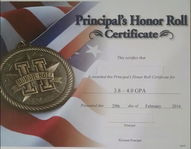

<!doctype html>
<html>
    <head>
        <title>Cade's Website</title>
        <meta charset="utf-8">
        <link href="https://fonts.googleapis.com/css?family=Roboto+Condensed" rel="stylesheet"> 
        <link href="https://fonts.googleapis.com/css?family=Raleway" rel="stylesheet">   
        <link href="https://fonts.googleapis.com/css?family=Lobster" rel="stylesheet">   
        <link href="app.css" rel="stylesheet"/>
    </head>
</html>
<header>
    <br>
    <h1>Cade's Website</h1>
    <br>
    <ul>
        <li><a href="index.html">Home Page</a></li>
        <li><a href="ATM.html">ATM</a></li>
        <li><a href="Future.html">Future</a></li>
        <li><a href="Soccer.html">Soccer</a></li>
    </ul>
</header>
<body>
    <article>
       <h2 id="All-About-Me">All About Me</h2>
    </article>

    <article>
        <h2>My Lovely Family</h2>
        <p><h3>My Mom grew up in the Philippines, and my Dad grew up in Hawaii. My Mom and Dad met through college and married in Hawaii not long after. In 1999, my older sister, Bryn, was born, I following in 2004, and my younger brother, Dylan, in 2007. We are a family of 5. My brother Dylan is in elementary but soon will be in middle school. My sister Bryn is in high school and soon will be in college.</h3></p>
        <center></center>
    </article>

    <article>
        <h2>My Skills</h2>
        <p><h3>I find myself skilled and able to excel in typing, coding, technology based activities, track, soccer and a variety of other physical sports. Creating and editing videos that I made are something that I have a lot of fun doing. I also have experience with playing the piano as well as the violin. </h3></p>
    </article>


    <article>
    <h2>Hobbies and Interests</h2>
        <p><h3>When I'm not working or at school, I would probably be popping my earbuds in my ears and listening to music. I love to write stories online for others to see and I don't mind spending a while doing so. Plopping down with an electronic from time to time is also something I do when I have free time. I rarely get some time for myself but I'll most likely be watching stuff related to K-pop on YouTube. <a href="https://www.youtube.com/user/ibighit?spfreload=5" target="_blank">ibighit</a> and <a href="https://www.youtube.com/user/nigahiga" target="_blank">Ryan Higa</a> are the channels I mostly watch. At the moment, writing stories online and business economics hold my interest. I've always been good at controlling, organization, management, and strategy and business economics include that. This interest might influence my career choice in the future but for now it is just an enjoyable interest I have at the moment.</h3>
        </p>
        <center></center>
    </article>

    <article>
        <h2>Clubs and Volunteer</h2>
        <p><h3>I am involved in many clubs going back to elementary school. Today, I am in the California Junior Scholarship Federation (CJSF), Genius Bar, and DEN Leaders. CJSF is an Honor Society whose purpose is to foster high standards of scholarship, service, and citizenship for students in grades 7 and 8. Genius Bar is a club that specializes in technology and is set to help other students/staff/teachers who need one on one help with computers. In this club you also learn how to put together and edit videos. DEN Leaders is a group that students can approach if they are in need of help. I've also volunteered in helping coaching younger kids in soccer at their practices.</h3></p>
    <article>
        <h2>My Awards</h2>
        <center></center>
        <p><h3>I have compiled a number of awards. Some of them I have received are the Principal's Honor Roll of having a 3.8-4.0 G.P.A, High School Readiness, Achievement, and All Es Citizenship Award. I've also received sports awards from Track and Soccer.</h3></p>
    </article>
</body>
